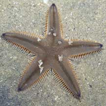
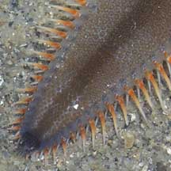
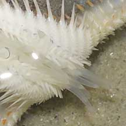
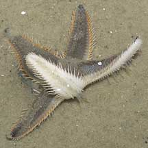
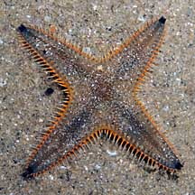
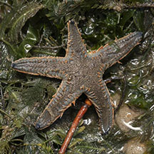
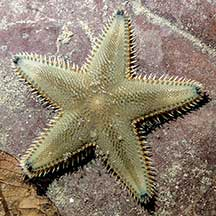

|
|
| sea stars text index | photo index |
| Phylum Echinodermata > Class Stelleroida > Subclass Asteroidea > Genus Astropecten |
| Plain
sand star Astropecten indicus Family Astropectinidae updated Mar 2020 Where seen? This fast moving sea star is commonly encountered on our Northern shores. In sandy or silty shores. It comes out in large numbers at sunset. During the day, it usually remains buried in the sand or silt. So far, not seen in the South on the intertidal. According to Marsh and Fromont, it is moderately common on silty sand, weed and sand and shells in Australia. Features: Diameter with arms 4-6cm. Body rather flat. Usually 5 arms long, tapered to a sharp tip. Stout flat long spines along the arms. These spines resemble the teeth of a comb and members of this family are sometimes called Comb sea stars. The spines are usually tinged a bright orange at the base with white tips. The marginal plates on the sides of the arms are not so large. Upperside generally a plain bluish brown, with a darker brown centre and a brown stripe down the length of each arm. The tips of the arms are black. Underside white without markings. Tubefeet translucent with pointed tips. What does it eat? According to Marsh and Fromont, it eats clams. |
 Changi, Jun 05 |
 Stout flat spines on the sides. |
 Pointed tube feet |
| Feeding on a star: Sometimes, tiny white snails are found on the upperside. These are parasitic snails (Family Eulimidae). |
|
 Chek Jawa, Apr 05 |
 Sometimes with only 4 arms. Changi, Aug 08 |
*Species are difficult to positively identify without close examination.
On this website, they are grouped by external features for convenience of display.
| Plain sand stars on Singapore shores |
On wildsingapore
flickr
|
| Other sightings on Singapore shores |
 Coney Island, Feb 26 Photo shared by Rui Quan Oh on facebook. |
 East Coast-Marina Bay, Jan 21 Photo shared by Vincent Choo on facebook. |
Links
|